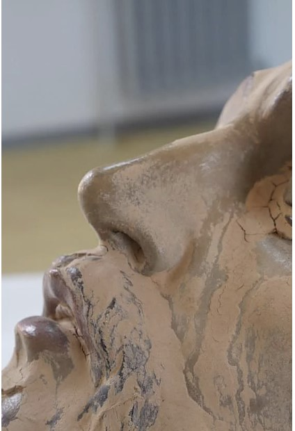
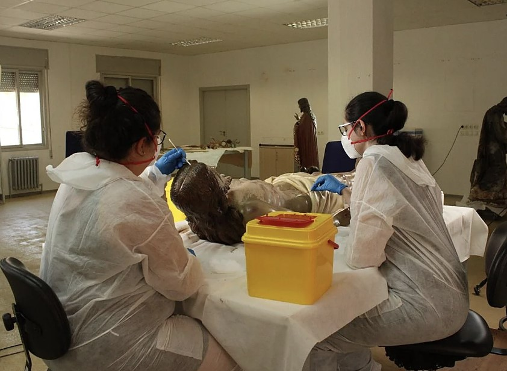

Introducción
La escultura fue gravemente afectada por los daños ocasionados por la DANA en Valencia. Tras su recuperación, el Institut Valencià de Conservació, Restauració i Investigació (IVCR+i) llevó a cabo los trabajos de conservación y restauración necesarios para devolver la obra a su estado original.
Estado inicial de la escultura
La obra presentaba importantes daños estructurales y pérdida de policromía debido a la exposición prolongada al agua y a las condiciones ambientales posteriores al temporal.


Proceso de restauración
análisis → limpieza → consolidación → reintegración cromática → protección final

Vídeo del proceso de restauración
Modelo tridimensional
Datos de la obra
Denominación: Cristo yacente
Localidad: Paiporta (Valencia)
Tipología: Escultura religiosa
Material: Madera policromada
Estado: Restaurada tras daños por inundación